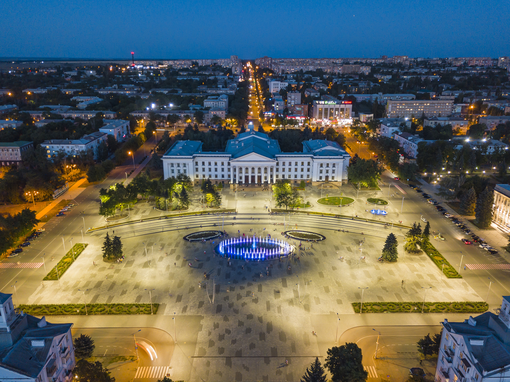
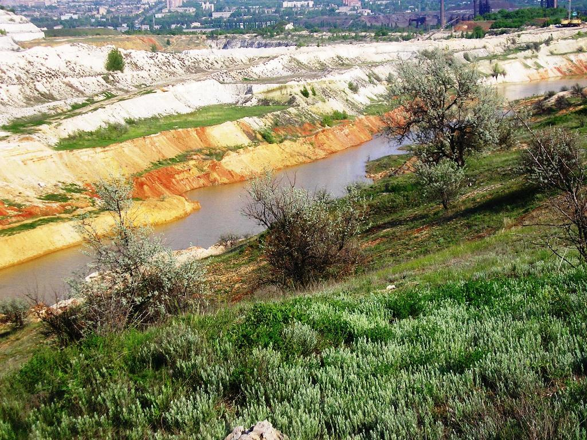
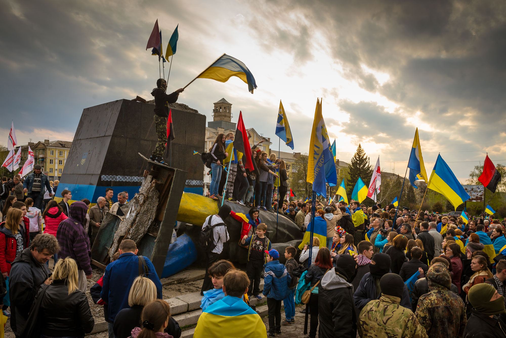

Коротко про Місто
Крамато́рськ — місто обласного підпорядкування в Україні, адміністративний центр Краматорської міської громади та Краматорського району Донецькій області. Разом із навколишніми містами утворює Краматорсько-Костянтинівську агломерацію. Значний центр машинобудування України.
Під час російської збройної агресії проти України у 2014 році відбулася битва за Краматорськ. З 11 жовтня 2014 року в місті перебуває Донецька обласна державна адміністрація.

Географія
Розміщення та фізична географія
Краматорськ та прилеглі до нього селища розташовані у долинах річки Казенний Торець (притока Сіверського Донця) та його приток, оточених пагорбами, у північній частині Донецької області. Пагорби порізано ярами й балками. Найменша висота над рівнем моря — 60 м — уріз води Торця в Ясногірці. На берегах Казенного Торця і його притоки Білянки у двох місцях утворено круті схили — «крейдяні гори». Межі міста лежать на найбільших висотах (метрів): 199,1 — у селищі Василівська Пустош; 177,3 — на аеродромі; 169,5 — Крейдяна гора; 167,6 — Карачун-гора; 158,4 — в селищі Жовтневий

Людська діяльність справила нові форми рельєфу, найбільш значні з яких — це кар'єр у Крейдяній горі та шлакові відвали при КМЗ та НКМЗ. На території Краматорська шість розвіданих родовищ корисних копалин: Краматорське (крейда й глина), Новокраматорське (важкотопна глина), Яснополянське (вохроглина), Шабельковське (формувальний пісок), Розсоховатське (будівельний пісок), Краматорське (керамічна сировина).
Видобувається сім видів мінеральної сировини: будівельні, вохра, цегляно-черепичні й керамічні глини (всього 107,2 тис. т в 2008 р.), крейда (576,2 тис. т), формувальні та будівельні піски. Завдяки відкритим родовищам при станції Краматорська в 1885 р. побудували завод будівельних матеріалів, котрий поклав початок іншим заводам і селищу. З кінця 1930-х років до Другої світової війни північніше Мар'ївки видобували вугілля. Потужність пласта була 40 см. Після війни вхід до шахти завалився та був затоплений
Історія
Заснування
За археологічними відомостями, на території сучасного Краматорська та його найближчих передмість люди селилися ще з давніх-давен. На північно-західній околиці Краматорська знайдено каменоломні й майстерні обробки кременя епохи неоліту, що існували й у період ранньої міді. У передмісті Краматорська досліджено також курганне поховання металурга-ливаря епохи бронзи.
У другій половині XVII — початку XVIII століття цю частину Слобожанщини масово заселяють козаки з Гетьманщини й кріпаки з південних округ Московії та Мордовії.
У другій половині XVIII століття територія, яку нині посідає місто, масово заселяють козаки Слобідського війська.
У різні часи поселення мало різні назви; теперішню пов'язують зі сполукою «кром» (укріплення) та «торський» (від однойменної річки) за часу існування рубіжної лінії.
У складі Російської імперії
Місто розвинулося від селища при маленькій залізничній станції, побудованій у 1868 році, до сучасного досить великого міста обласного значення, промислового центру й транспортного вузла.
Наприкінці 1860-х на споруджуваній Курсько-Харківсько-Азовській залізниці біля річки Казенний Торець з'явилася залізнична станція Краматорська, поблизу якої засноване селище. Спочатку селище мало назву Крам на Торці, згодом поступово назва змінилась на Краматорськ.
Українська революція
Після того як стало відомо про повалення царського режиму, у Краматорську 2 березня було створено Громадський комітет — видним його діячем був кадет доктор Демулін. За підтримки меншовиків та есерів Демулін виступив у тимчасовому комітеті проти роззброєння поліції, як заходу, здатного призвести до суспільних безладів, та пропонував щонайбільше роззброїти «поганих» поліцейських, а «хороших» — залишити на місцях. Крім того, він виступав проти організації рад
З квітня по грудень 1918 року Краматорськ перебував під владою Української Держави гетьмана Павла Скоропадського. Після антигетьманського повстання Краматорськ ненадовго перейшов під владу Директорії УНР.
Через поразку УНР в радянсько-українській війні, Краматорськ, як і інші населені пункти Донбасу, опинився під радянською владою.
Радянський період
З 1926 року — селище міського типу, 1932 року отримав статус міста обласного підпорядкування у складі новоствореної Донецької області.
27 жовтня 1941 року місто було тимчасово окуповане німецькими військами
З 5 по 27 лютого 1943 року місто перебувало під контролем радянських військ, остаточно відвойоване ними 6 вересня 1943 — військами Південно-Західного фронту в ході Донбаської операції[9]. До серпня 1946 року 1-м секретарем міського комітету КП(б)У працював Потанін Дмитро Миколайович, у серпні 1946 року 1-м секретарем Краматорського міського комітету КП(б)У призначили Кузнецова Івана Софроновича.
За радянські часи гостям міста екскурсоводи обов'язково повідомляли, що Краматорськ — місто п'яти світанків на день. Це було пов'язано з тим, що з доменних печей металургійного заводу, кілька разів на добу, вивозили та виливали на відвали (на які краматорчани казали «шлакові гори») рідкий розжарений шлак, що у темну пору виглядало як червонувата заграва, схожа на світанок над містом, коли зненацька ставало майже світло на декілька хвилин.
Незалежна Україна
З 1991 року — місто у складі незалежної України. В 1997 почалася ретрансляція програм FM радіо «Європа Плюс Донбас», а 1998 року розпочала мовлення перша недержавна радіостанція («Радіо Біт»).
17 квітня 2015 року в Краматорську було повалено пам'ятник Леніну.

У 2018 році в Україні відзначено на державному рівні пам'ятна дата — 150 років з часу заснування міста Краматорська (1868)
Російське вторгнення в Україну
З 12 квітня по 5 липня 2014 місто було окуповане російськими бойовиками з «ДНР». Окупанти частково зруйновали цехи заводу Енергомашспецсталь та Краматорського заводу важкого верстатобудування, близько 50 осіб загинуло[13]. 13 вересня учасники міського віче прийняли рішення створити добровольчі загони — для захисту міста від російської окупаційної армії; також було вирішено збирати гроші на засоби захисту для захисників, які вступали у підрозділи оборони
Під час російського вторгнення в Україну в ніч на 5 квітня 2022 року росіяни здійснили ракетний удар по місту
На сьогодні місто є військовим хабом і тримає оборону й надалі, постійно стерплюючи обстріли з різних видів озброєння.